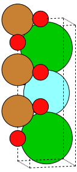

Pymatgen and the Materials Project API#
Pymatgen - Python Materials Genomics#

Pymatgen is a Python package similar to ase. pymatgen is designed to support VASP and ABINIT. Like ase, we will not be able to cover much of the extensive functionality of pymatgen.
Note
Our use of pymatgen will be very limited. Nonetheless, we will install pymatgen for use as a converter: we can obtain crystal structure data from the Materials Project and convert it to an ase Atoms object.
Installation#
If you need to, please install pymatgen, please do so using a command such as pip3 install pymatgen.
MPRester - The Materials Project API#
The Materials Project API allows a user to query information from the Materials Project.
What is an API?
“API” stands for application programming interface. An API is a set of commands defined to allow programmatic access to a server that archives or generates data for users.
APIs are especially useful for automating queries. They make getting large amounts of information much more efficient than point-and-click manual access to a web server via an Internet browser.
Installation#
The Materials Project API is coded in the Python package MPRester. To use ASE, you must first install the ase Python module. You may use a command such as pip3 install mp-api to do this.
Important
Note
An API key is required to use MPRester.
You must be logged in on materialsproject.org to obtain your API key.
You can obtain your personal API key from your Materials Project Dashboard, or you can get it from the documentation page.
Your API key is a long alphanumeric string (about 30 characters) that you must use every time you wish to query the Materials Project programmatically via the API.
Using MPRester#
To use your API key, it is helpful to store its value in a string, like this:
# Save your Materials Project API as a string
MP_API_KEY = '---your api key here ----'
Once the API key is stored as a string in a variable (here, we used the variable MP_API_KEY), that variable is used as a parameter with MPRester to obtain information from the Materials Project. The syntax is to define a code block using code like with MPRester(MP_API_KEY) as mpr:. Following this line, indented lines define a code block in which we can access the API methods using the syntax mpr.some_method(). Let’s start with some examples of MPRester usage.
Example: Get the Crystal Structure of a Specific Material#
In the Materials Project, each material has a unique identifier, known as its Materials Project ID (MPID). When you want information about a single material, it is reasonable to perform a manual search using the Materials Explorer for the material so you can find its MPID. Then, you can use the MPID along with MPRester to automate queries about the material.
As an example, YBa2Cu3O7 has mp-20674 as its MPID. We can obtain its crystal structure directly using this MPID. To do this, we do the following:
from mp_api.client import MPRester
import os
import pymatgen as pmg
from ase.io import write
MPID = 'mp-20674' # Materials Project ID number
"""
The 'with ...' statement defines an MPRester code block. Subsequent
indented statements belong to the code block, and the object mpr
may be used within the code block.
"""
with MPRester(MP_API_KEY) as mpr:
# Get only the structure for YBa2Cu3O7
structure = mpr.get_structure_by_material_id(MPID)
Show code cell output
/media/colin/Shared/colin/git/materials-ml-workshop/env/lib/python3.10/site-packages/mp_api/client/mprester.py:182: UserWarning: mpcontribs-client not installed. Install the package to query MPContribs data, or construct pourbaix diagrams: 'pip install mpcontribs-client'
warnings.warn(
The MPRester method, get_structure_by_material_id(), accessible as mpr.get_structure_by_material(), queries the Materials Project and returns the crystal structure, storing it in an object structure. Having accessed the Materials Project, we no longer require the mpr object. We can now exit the MPRester code block by resetting the indentation.
Next, we provide code to inspect the structure we downloaded. What is its data type? How can we use it?
"""
Reset the indentation (exith the 'with' block), and examine the
structure we obtained.
"""
print('\nWhat is the data type of the structure we obtained?')
print(type(structure))
print('\nWhat is the structure we obtained?')
print(structure)
What is the data type of the structure we obtained?
<class 'pymatgen.core.structure.Structure'>
What is the structure we obtained?
Full Formula (Ba2 Y1 Cu3 O7)
Reduced Formula: Ba2YCu3O7
abc : 3.844668 3.926152 11.823664
angles: 90.000000 90.000000 90.000000
pbc : True True True
Sites (13)
# SP a b c magmom
--- ---- --- --- -------- --------
0 Ba 0.5 0.5 0.819391 -0
1 Ba 0.5 0.5 0.180609 -0
2 Y 0.5 0.5 0.5 0
3 Cu 0 0 0.646678 -0
4 Cu 0 0 0.353322 -0
5 Cu 0 0 0 0
6 O 0 0.5 0 0
7 O 0.5 0 0.620653 -0
8 O 0.5 0 0.379347 -0
9 O 0 0.5 0.621651 -0
10 O 0 0.5 0.378349 -0
11 O 0 0 0.84082 0
12 O 0 0 0.15918 0
The output of the above code cell indicates that the data in structure is in a format compatible with pymatgen. pymatgen has a tool to convert the pymatgen structure to an ase object, which we can visualize.
from pymatgen.io.ase import AseAtomsAdaptor as aaa
"""
We use pymatgen to convert the structure to an
ASE object. Since our work with the MaterialsProject
API is complete, this can be done outside the WITH
block.
"""
crystal = aaa.get_atoms(structure) # convert pymatgen to ase
# Make a static visualization
orientation='90x,75y,-9x'
write('YBa2Cu3O7_structure.png', crystal, show_unit_cell=2,
rotation=orientation)

The following code creates an interactive visualization for the downloaded crystal structure.
from ase.visualize import view
# Interactive 3D visualization
view(crystal, viewer='x3d')
Having obtained the crystal structure, we can now use it in a variety of ways:
Use it within an atomistic simulation
Use
ase.io.write()to save the structure in a structure file (*.cif,*.xyz, etc.)
Example: Getting the Band Structure for a Material#
We can use the MPRester class to obtain band structures for a material:
mpid = "mp-149" # this is the MPID for silicon crystal (diamond lattice)
with MPRester(MP_API_KEY) as mpr:
bs = mpr.get_bandstructure_by_material_id("mp-149")
Show code cell output
This returns a pymatgen band structure object, and pymatgen has a tool for plotting this structure.
from pymatgen.electronic_structure.plotter import BSPlotter
# plot & show the band structure we obtained
BSPlotter(bs).get_plot().show()
Example: Searching using MPRester#
Materials Project data can be queried in two ways:
through a specific (list of) MPID(s), and/or
through property filters (e.g. band gap less than 0.5 eV)
When querying a list of MPIDs, we use the following syntax:
with MPRester(MP_API_KEY) as mpr:
docs = mpr.summary.search(material_ids=["mp-149", "mp-13", "mp-22526"])
Show code cell output
/media/colin/Shared/colin/git/materials-ml-workshop/env/lib/python3.10/site-packages/mp_api/client/mprester.py:182: UserWarning: mpcontribs-client not installed. Install the package to query MPContribs data, or construct pourbaix diagrams: 'pip install mpcontribs-client'
warnings.warn(
Here, each material entry in the Materials Project has summary data, and we are simply searching the summary data using mpr.summary.search(). Since we queried for a list of MPIDs, we store in docs a list of “documents” (formally, a list of MPDataDoc objects).
We can now reference an individual document and extract its properties. We’ll use a for loop to list the MPID and chemical formula for each search hit:
print('Our query returned {0} docs.'.format( len(docs) ))
for idx, mat_doc in enumerate(docs):
print('Item {0}: MPID = {1} (formula: {2})'.format(idx,
mat_doc.material_id,
mat_doc.formula_pretty))
Our query returned 3 docs.
Item 0: MPID = mp-149 (formula: Si)
Item 1: MPID = mp-13 (formula: Fe)
Item 2: MPID = mp-22526 (formula: LiCoO2)
What properties ('material_id', 'formula_pretty', etc.) are available for search in the summary data? We can obtain a list of document properties using the following syntax:
print(mpr.summary.available_fields)
['builder_meta', 'nsites', 'elements', 'nelements', 'composition', 'composition_reduced', 'formula_pretty', 'formula_anonymous', 'chemsys', 'volume', 'density', 'density_atomic', 'symmetry', 'property_name', 'material_id', 'deprecated', 'deprecation_reasons', 'last_updated', 'origins', 'warnings', 'structure', 'task_ids', 'uncorrected_energy_per_atom', 'energy_per_atom', 'formation_energy_per_atom', 'energy_above_hull', 'is_stable', 'equilibrium_reaction_energy_per_atom', 'decomposes_to', 'xas', 'grain_boundaries', 'band_gap', 'cbm', 'vbm', 'efermi', 'is_gap_direct', 'is_metal', 'es_source_calc_id', 'bandstructure', 'dos', 'dos_energy_up', 'dos_energy_down', 'is_magnetic', 'ordering', 'total_magnetization', 'total_magnetization_normalized_vol', 'total_magnetization_normalized_formula_units', 'num_magnetic_sites', 'num_unique_magnetic_sites', 'types_of_magnetic_species', 'k_voigt', 'k_reuss', 'k_vrh', 'g_voigt', 'g_reuss', 'g_vrh', 'universal_anisotropy', 'homogeneous_poisson', 'e_total', 'e_ionic', 'e_electronic', 'n', 'e_ij_max', 'weighted_surface_energy_EV_PER_ANG2', 'weighted_surface_energy', 'weighted_work_function', 'surface_anisotropy', 'shape_factor', 'has_reconstructed', 'possible_species', 'has_props', 'theoretical', 'database_IDs']
Next, we query using property filters. We apply the following filters:
Materials containing Si and O
Materials with a band gap no greater than 1.0 eV but no less than 0.5 eV
Instead of all available summary fields, we’ll only ask for a few:
"material_id","formula_pretty","band_gap".
with MPRester(MP_API_KEY) as mpr:
docs = mpr.summary.search(elements=["Si", "O"],
band_gap=(0.5, 0.75),
fields=["material_id", "formula_pretty",
"band_gap"])
example_doc = docs[0]
# initial_structures = example_doc.initial_structures
Show code cell output
---------------------------------------------------------------------------
ConnectionResetError Traceback (most recent call last)
File /media/colin/Shared/colin/git/materials-ml-workshop/env/lib/python3.10/site-packages/urllib3/connectionpool.py:790, in HTTPConnectionPool.urlopen(self, method, url, body, headers, retries, redirect, assert_same_host, timeout, pool_timeout, release_conn, chunked, body_pos, preload_content, decode_content, **response_kw)
789 # Make the request on the HTTPConnection object
--> 790 response = self._make_request(
791 conn,
792 method,
793 url,
794 timeout=timeout_obj,
795 body=body,
796 headers=headers,
797 chunked=chunked,
798 retries=retries,
799 response_conn=response_conn,
800 preload_content=preload_content,
801 decode_content=decode_content,
802 **response_kw,
803 )
805 # Everything went great!
File /media/colin/Shared/colin/git/materials-ml-workshop/env/lib/python3.10/site-packages/urllib3/connectionpool.py:491, in HTTPConnectionPool._make_request(self, conn, method, url, body, headers, retries, timeout, chunked, response_conn, preload_content, decode_content, enforce_content_length)
490 new_e = _wrap_proxy_error(new_e, conn.proxy.scheme)
--> 491 raise new_e
493 # conn.request() calls http.client.*.request, not the method in
494 # urllib3.request. It also calls makefile (recv) on the socket.
File /media/colin/Shared/colin/git/materials-ml-workshop/env/lib/python3.10/site-packages/urllib3/connectionpool.py:467, in HTTPConnectionPool._make_request(self, conn, method, url, body, headers, retries, timeout, chunked, response_conn, preload_content, decode_content, enforce_content_length)
466 try:
--> 467 self._validate_conn(conn)
468 except (SocketTimeout, BaseSSLError) as e:
File /media/colin/Shared/colin/git/materials-ml-workshop/env/lib/python3.10/site-packages/urllib3/connectionpool.py:1092, in HTTPSConnectionPool._validate_conn(self, conn)
1091 if conn.is_closed:
-> 1092 conn.connect()
1094 if not conn.is_verified:
File /media/colin/Shared/colin/git/materials-ml-workshop/env/lib/python3.10/site-packages/urllib3/connection.py:635, in HTTPSConnection.connect(self)
627 warnings.warn(
628 (
629 f"System time is way off (before {RECENT_DATE}). This will probably "
(...)
632 SystemTimeWarning,
633 )
--> 635 sock_and_verified = _ssl_wrap_socket_and_match_hostname(
636 sock=sock,
637 cert_reqs=self.cert_reqs,
638 ssl_version=self.ssl_version,
639 ssl_minimum_version=self.ssl_minimum_version,
640 ssl_maximum_version=self.ssl_maximum_version,
641 ca_certs=self.ca_certs,
642 ca_cert_dir=self.ca_cert_dir,
643 ca_cert_data=self.ca_cert_data,
644 cert_file=self.cert_file,
645 key_file=self.key_file,
646 key_password=self.key_password,
647 server_hostname=server_hostname,
648 ssl_context=self.ssl_context,
649 tls_in_tls=tls_in_tls,
650 assert_hostname=self.assert_hostname,
651 assert_fingerprint=self.assert_fingerprint,
652 )
653 self.sock = sock_and_verified.socket
File /media/colin/Shared/colin/git/materials-ml-workshop/env/lib/python3.10/site-packages/urllib3/connection.py:774, in _ssl_wrap_socket_and_match_hostname(sock, cert_reqs, ssl_version, ssl_minimum_version, ssl_maximum_version, cert_file, key_file, key_password, ca_certs, ca_cert_dir, ca_cert_data, assert_hostname, assert_fingerprint, server_hostname, ssl_context, tls_in_tls)
772 server_hostname = normalized
--> 774 ssl_sock = ssl_wrap_socket(
775 sock=sock,
776 keyfile=key_file,
777 certfile=cert_file,
778 key_password=key_password,
779 ca_certs=ca_certs,
780 ca_cert_dir=ca_cert_dir,
781 ca_cert_data=ca_cert_data,
782 server_hostname=server_hostname,
783 ssl_context=context,
784 tls_in_tls=tls_in_tls,
785 )
787 try:
File /media/colin/Shared/colin/git/materials-ml-workshop/env/lib/python3.10/site-packages/urllib3/util/ssl_.py:459, in ssl_wrap_socket(sock, keyfile, certfile, cert_reqs, ca_certs, server_hostname, ssl_version, ciphers, ssl_context, ca_cert_dir, key_password, ca_cert_data, tls_in_tls)
457 pass
--> 459 ssl_sock = _ssl_wrap_socket_impl(sock, context, tls_in_tls, server_hostname)
460 return ssl_sock
File /media/colin/Shared/colin/git/materials-ml-workshop/env/lib/python3.10/site-packages/urllib3/util/ssl_.py:503, in _ssl_wrap_socket_impl(sock, ssl_context, tls_in_tls, server_hostname)
501 return SSLTransport(sock, ssl_context, server_hostname)
--> 503 return ssl_context.wrap_socket(sock, server_hostname=server_hostname)
File /usr/lib/python3.10/ssl.py:513, in SSLContext.wrap_socket(self, sock, server_side, do_handshake_on_connect, suppress_ragged_eofs, server_hostname, session)
507 def wrap_socket(self, sock, server_side=False,
508 do_handshake_on_connect=True,
509 suppress_ragged_eofs=True,
510 server_hostname=None, session=None):
511 # SSLSocket class handles server_hostname encoding before it calls
512 # ctx._wrap_socket()
--> 513 return self.sslsocket_class._create(
514 sock=sock,
515 server_side=server_side,
516 do_handshake_on_connect=do_handshake_on_connect,
517 suppress_ragged_eofs=suppress_ragged_eofs,
518 server_hostname=server_hostname,
519 context=self,
520 session=session
521 )
File /usr/lib/python3.10/ssl.py:1071, in SSLSocket._create(cls, sock, server_side, do_handshake_on_connect, suppress_ragged_eofs, server_hostname, context, session)
1070 raise ValueError("do_handshake_on_connect should not be specified for non-blocking sockets")
-> 1071 self.do_handshake()
1072 except (OSError, ValueError):
File /usr/lib/python3.10/ssl.py:1342, in SSLSocket.do_handshake(self, block)
1341 self.settimeout(None)
-> 1342 self._sslobj.do_handshake()
1343 finally:
ConnectionResetError: [Errno 104] Connection reset by peer
During handling of the above exception, another exception occurred:
ProtocolError Traceback (most recent call last)
File /media/colin/Shared/colin/git/materials-ml-workshop/env/lib/python3.10/site-packages/requests/adapters.py:486, in HTTPAdapter.send(self, request, stream, timeout, verify, cert, proxies)
485 try:
--> 486 resp = conn.urlopen(
487 method=request.method,
488 url=url,
489 body=request.body,
490 headers=request.headers,
491 redirect=False,
492 assert_same_host=False,
493 preload_content=False,
494 decode_content=False,
495 retries=self.max_retries,
496 timeout=timeout,
497 chunked=chunked,
498 )
500 except (ProtocolError, OSError) as err:
File /media/colin/Shared/colin/git/materials-ml-workshop/env/lib/python3.10/site-packages/urllib3/connectionpool.py:844, in HTTPConnectionPool.urlopen(self, method, url, body, headers, retries, redirect, assert_same_host, timeout, pool_timeout, release_conn, chunked, body_pos, preload_content, decode_content, **response_kw)
842 new_e = ProtocolError("Connection aborted.", new_e)
--> 844 retries = retries.increment(
845 method, url, error=new_e, _pool=self, _stacktrace=sys.exc_info()[2]
846 )
847 retries.sleep()
File /media/colin/Shared/colin/git/materials-ml-workshop/env/lib/python3.10/site-packages/urllib3/util/retry.py:470, in Retry.increment(self, method, url, response, error, _pool, _stacktrace)
469 if read is False or method is None or not self._is_method_retryable(method):
--> 470 raise reraise(type(error), error, _stacktrace)
471 elif read is not None:
File /media/colin/Shared/colin/git/materials-ml-workshop/env/lib/python3.10/site-packages/urllib3/util/util.py:38, in reraise(tp, value, tb)
37 if value.__traceback__ is not tb:
---> 38 raise value.with_traceback(tb)
39 raise value
File /media/colin/Shared/colin/git/materials-ml-workshop/env/lib/python3.10/site-packages/urllib3/connectionpool.py:790, in HTTPConnectionPool.urlopen(self, method, url, body, headers, retries, redirect, assert_same_host, timeout, pool_timeout, release_conn, chunked, body_pos, preload_content, decode_content, **response_kw)
789 # Make the request on the HTTPConnection object
--> 790 response = self._make_request(
791 conn,
792 method,
793 url,
794 timeout=timeout_obj,
795 body=body,
796 headers=headers,
797 chunked=chunked,
798 retries=retries,
799 response_conn=response_conn,
800 preload_content=preload_content,
801 decode_content=decode_content,
802 **response_kw,
803 )
805 # Everything went great!
File /media/colin/Shared/colin/git/materials-ml-workshop/env/lib/python3.10/site-packages/urllib3/connectionpool.py:491, in HTTPConnectionPool._make_request(self, conn, method, url, body, headers, retries, timeout, chunked, response_conn, preload_content, decode_content, enforce_content_length)
490 new_e = _wrap_proxy_error(new_e, conn.proxy.scheme)
--> 491 raise new_e
493 # conn.request() calls http.client.*.request, not the method in
494 # urllib3.request. It also calls makefile (recv) on the socket.
File /media/colin/Shared/colin/git/materials-ml-workshop/env/lib/python3.10/site-packages/urllib3/connectionpool.py:467, in HTTPConnectionPool._make_request(self, conn, method, url, body, headers, retries, timeout, chunked, response_conn, preload_content, decode_content, enforce_content_length)
466 try:
--> 467 self._validate_conn(conn)
468 except (SocketTimeout, BaseSSLError) as e:
File /media/colin/Shared/colin/git/materials-ml-workshop/env/lib/python3.10/site-packages/urllib3/connectionpool.py:1092, in HTTPSConnectionPool._validate_conn(self, conn)
1091 if conn.is_closed:
-> 1092 conn.connect()
1094 if not conn.is_verified:
File /media/colin/Shared/colin/git/materials-ml-workshop/env/lib/python3.10/site-packages/urllib3/connection.py:635, in HTTPSConnection.connect(self)
627 warnings.warn(
628 (
629 f"System time is way off (before {RECENT_DATE}). This will probably "
(...)
632 SystemTimeWarning,
633 )
--> 635 sock_and_verified = _ssl_wrap_socket_and_match_hostname(
636 sock=sock,
637 cert_reqs=self.cert_reqs,
638 ssl_version=self.ssl_version,
639 ssl_minimum_version=self.ssl_minimum_version,
640 ssl_maximum_version=self.ssl_maximum_version,
641 ca_certs=self.ca_certs,
642 ca_cert_dir=self.ca_cert_dir,
643 ca_cert_data=self.ca_cert_data,
644 cert_file=self.cert_file,
645 key_file=self.key_file,
646 key_password=self.key_password,
647 server_hostname=server_hostname,
648 ssl_context=self.ssl_context,
649 tls_in_tls=tls_in_tls,
650 assert_hostname=self.assert_hostname,
651 assert_fingerprint=self.assert_fingerprint,
652 )
653 self.sock = sock_and_verified.socket
File /media/colin/Shared/colin/git/materials-ml-workshop/env/lib/python3.10/site-packages/urllib3/connection.py:774, in _ssl_wrap_socket_and_match_hostname(sock, cert_reqs, ssl_version, ssl_minimum_version, ssl_maximum_version, cert_file, key_file, key_password, ca_certs, ca_cert_dir, ca_cert_data, assert_hostname, assert_fingerprint, server_hostname, ssl_context, tls_in_tls)
772 server_hostname = normalized
--> 774 ssl_sock = ssl_wrap_socket(
775 sock=sock,
776 keyfile=key_file,
777 certfile=cert_file,
778 key_password=key_password,
779 ca_certs=ca_certs,
780 ca_cert_dir=ca_cert_dir,
781 ca_cert_data=ca_cert_data,
782 server_hostname=server_hostname,
783 ssl_context=context,
784 tls_in_tls=tls_in_tls,
785 )
787 try:
File /media/colin/Shared/colin/git/materials-ml-workshop/env/lib/python3.10/site-packages/urllib3/util/ssl_.py:459, in ssl_wrap_socket(sock, keyfile, certfile, cert_reqs, ca_certs, server_hostname, ssl_version, ciphers, ssl_context, ca_cert_dir, key_password, ca_cert_data, tls_in_tls)
457 pass
--> 459 ssl_sock = _ssl_wrap_socket_impl(sock, context, tls_in_tls, server_hostname)
460 return ssl_sock
File /media/colin/Shared/colin/git/materials-ml-workshop/env/lib/python3.10/site-packages/urllib3/util/ssl_.py:503, in _ssl_wrap_socket_impl(sock, ssl_context, tls_in_tls, server_hostname)
501 return SSLTransport(sock, ssl_context, server_hostname)
--> 503 return ssl_context.wrap_socket(sock, server_hostname=server_hostname)
File /usr/lib/python3.10/ssl.py:513, in SSLContext.wrap_socket(self, sock, server_side, do_handshake_on_connect, suppress_ragged_eofs, server_hostname, session)
507 def wrap_socket(self, sock, server_side=False,
508 do_handshake_on_connect=True,
509 suppress_ragged_eofs=True,
510 server_hostname=None, session=None):
511 # SSLSocket class handles server_hostname encoding before it calls
512 # ctx._wrap_socket()
--> 513 return self.sslsocket_class._create(
514 sock=sock,
515 server_side=server_side,
516 do_handshake_on_connect=do_handshake_on_connect,
517 suppress_ragged_eofs=suppress_ragged_eofs,
518 server_hostname=server_hostname,
519 context=self,
520 session=session
521 )
File /usr/lib/python3.10/ssl.py:1071, in SSLSocket._create(cls, sock, server_side, do_handshake_on_connect, suppress_ragged_eofs, server_hostname, context, session)
1070 raise ValueError("do_handshake_on_connect should not be specified for non-blocking sockets")
-> 1071 self.do_handshake()
1072 except (OSError, ValueError):
File /usr/lib/python3.10/ssl.py:1342, in SSLSocket.do_handshake(self, block)
1341 self.settimeout(None)
-> 1342 self._sslobj.do_handshake()
1343 finally:
ProtocolError: ('Connection aborted.', ConnectionResetError(104, 'Connection reset by peer'))
During handling of the above exception, another exception occurred:
ConnectionError Traceback (most recent call last)
Cell In[12], line 1
----> 1 with MPRester(MP_API_KEY) as mpr:
2 docs = mpr.summary.search(elements=["Si", "O"],
3 band_gap=(0.5, 0.75),
4 fields=["material_id", "formula_pretty",
5 "band_gap"])
7 example_doc = docs[0]
File /media/colin/Shared/colin/git/materials-ml-workshop/env/lib/python3.10/site-packages/mp_api/client/mprester.py:192, in MPRester.__init__(self, api_key, endpoint, notify_db_version, include_user_agent, monty_decode, use_document_model, session, headers)
189 warnings.warn(f"Problem loading MPContribs client: {error}")
191 # Check if emmet version of server os compatible
--> 192 emmet_version = version.parse(self.get_emmet_version())
194 if version.parse(emmet_version.base_version) < version.parse(
195 _MAPI_SETTINGS.MIN_EMMET_VERSION
196 ):
197 warnings.warn(
198 "The installed version of the mp-api client may not be compatible with the API server. "
199 "Please install a previous version if any problems occur."
200 )
File /media/colin/Shared/colin/git/materials-ml-workshop/env/lib/python3.10/site-packages/mp_api/client/mprester.py:340, in MPRester.get_emmet_version(self)
333 def get_emmet_version(self):
334 """
335 Get the latest version emmet-core and emmet-api used in the
336 current API service.
337
338 Returns: version as a string
339 """
--> 340 return get(url=self.endpoint + "heartbeat").json()["version"]
File /media/colin/Shared/colin/git/materials-ml-workshop/env/lib/python3.10/site-packages/requests/api.py:73, in get(url, params, **kwargs)
62 def get(url, params=None, **kwargs):
63 r"""Sends a GET request.
64
65 :param url: URL for the new :class:`Request` object.
(...)
70 :rtype: requests.Response
71 """
---> 73 return request("get", url, params=params, **kwargs)
File /media/colin/Shared/colin/git/materials-ml-workshop/env/lib/python3.10/site-packages/requests/api.py:59, in request(method, url, **kwargs)
55 # By using the 'with' statement we are sure the session is closed, thus we
56 # avoid leaving sockets open which can trigger a ResourceWarning in some
57 # cases, and look like a memory leak in others.
58 with sessions.Session() as session:
---> 59 return session.request(method=method, url=url, **kwargs)
File /media/colin/Shared/colin/git/materials-ml-workshop/env/lib/python3.10/site-packages/requests/sessions.py:587, in Session.request(self, method, url, params, data, headers, cookies, files, auth, timeout, allow_redirects, proxies, hooks, stream, verify, cert, json)
582 send_kwargs = {
583 "timeout": timeout,
584 "allow_redirects": allow_redirects,
585 }
586 send_kwargs.update(settings)
--> 587 resp = self.send(prep, **send_kwargs)
589 return resp
File /media/colin/Shared/colin/git/materials-ml-workshop/env/lib/python3.10/site-packages/requests/sessions.py:701, in Session.send(self, request, **kwargs)
698 start = preferred_clock()
700 # Send the request
--> 701 r = adapter.send(request, **kwargs)
703 # Total elapsed time of the request (approximately)
704 elapsed = preferred_clock() - start
File /media/colin/Shared/colin/git/materials-ml-workshop/env/lib/python3.10/site-packages/requests/adapters.py:501, in HTTPAdapter.send(self, request, stream, timeout, verify, cert, proxies)
486 resp = conn.urlopen(
487 method=request.method,
488 url=url,
(...)
497 chunked=chunked,
498 )
500 except (ProtocolError, OSError) as err:
--> 501 raise ConnectionError(err, request=request)
503 except MaxRetryError as e:
504 if isinstance(e.reason, ConnectTimeoutError):
505 # TODO: Remove this in 3.0.0: see #2811
ConnectionError: ('Connection aborted.', ConnectionResetError(104, 'Connection reset by peer'))
To see what our search turned up, we can use some simple code, like this. We first find out how many hits our query returned using len(docs), and then we print only the first N hits, where we set N = 10.
N = 10
print('Our query returned {0} docs.'.format( len(docs) ))
print(f'Printing only the first {N} results:')
for idx in range(0,N):
mat_doc = docs[idx]
print('Item {0}: MPID = {1} ({2}), band gap = {3:6.4f} eV'.format(idx,
mat_doc.material_id,
mat_doc.formula_pretty,
mat_doc.band_gap))
Exercises#
Exercise 1: Obtain the electronic density of states (DOS) for YBa2Cu3O7. Plot it using pymatgen.
Hints:
To find the code to obtain the DOS, a Google search such as “MPRester DOS example” may help, or perhaps you can try asking a chatbot.
Once you have obtained a DOS and saved it as, say,
some_DOS, you can plot it using code such as this:
from pymatgen.electronic_structure.plotter import DosPlotter
import matplotlib.pyplot as plt
with MPRester(MP_API_KEY) as mpr:
some_DOS = <your code to get the DOS>
# obtain a DosPlotter object
Plotter = DosPlotter()
# add the DOS to the plotter
Plotter.add_dos('DOS', some_DOS)
"""
Choose appropriate numbers for:
E_lo and E_hi, the upper and lower limits
of the domain for your DOS plot.
MaxDensity, the upper limit for the range of
your DOS plot.
This may require some trial and error!
"""
Plotter.get_plot(xlim=(E_lo, E_hi), ylim=(0, MaxDensity))
plt.show()
Solutions#
Exercise 1: YBCO DOS#
Show code cell content
from mp_api.client import MPRester # client for Materials Project
from pymatgen.electronic_structure.plotter import DosPlotter
import matplotlib.pyplot as plt
YBCO = 'mp-20674' # Materials Project ID number
with MPRester(MP_API_KEY) as mpr:
YBCO_DOS = mpr.get_dos_by_material_id(YBCO)
print(YBCO_DOS)
# plot & show DOS we obtained
Plotter = DosPlotter()
Plotter.add_dos('DOS', YBCO_DOS)
Plotter.get_plot(xlim=(-10, 10), ylim=(0, 30))
plt.show()